画像一覧（本文の順）
スマホは画像を長押し→保存。PCは「保存」リンクから。見出し画像は一番上の 00_eyecatch.png です。
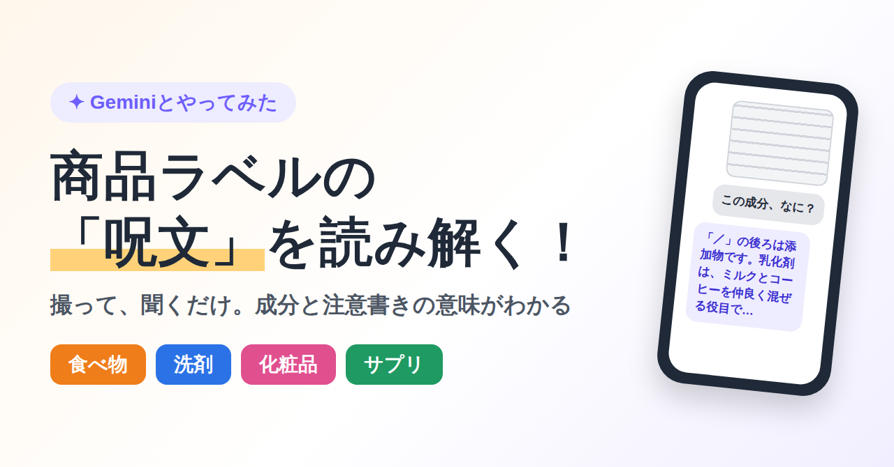
00_eyecatch.png（見出し画像） 保存
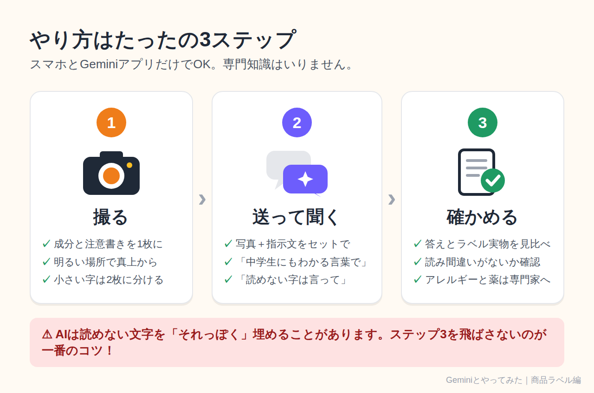
01_steps.png（3ステップの流れ） 保存
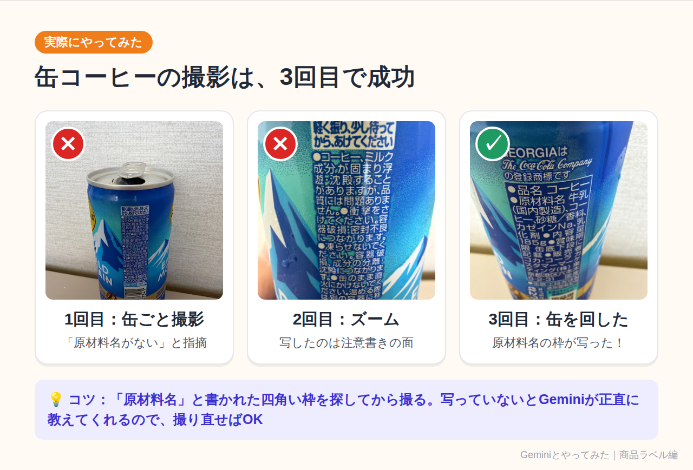
02a_coffee_retake.png（缶コーヒーの撮影は3回目で成功） 保存
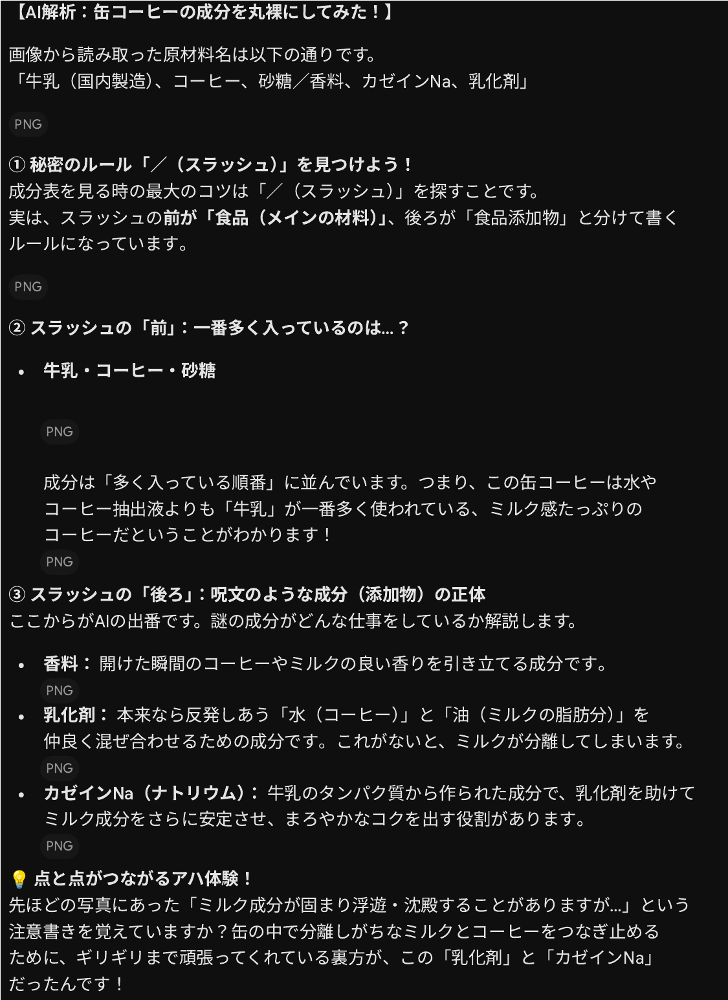
02b_gemini_analysis.png（Geminiの実際の回答画面） 保存
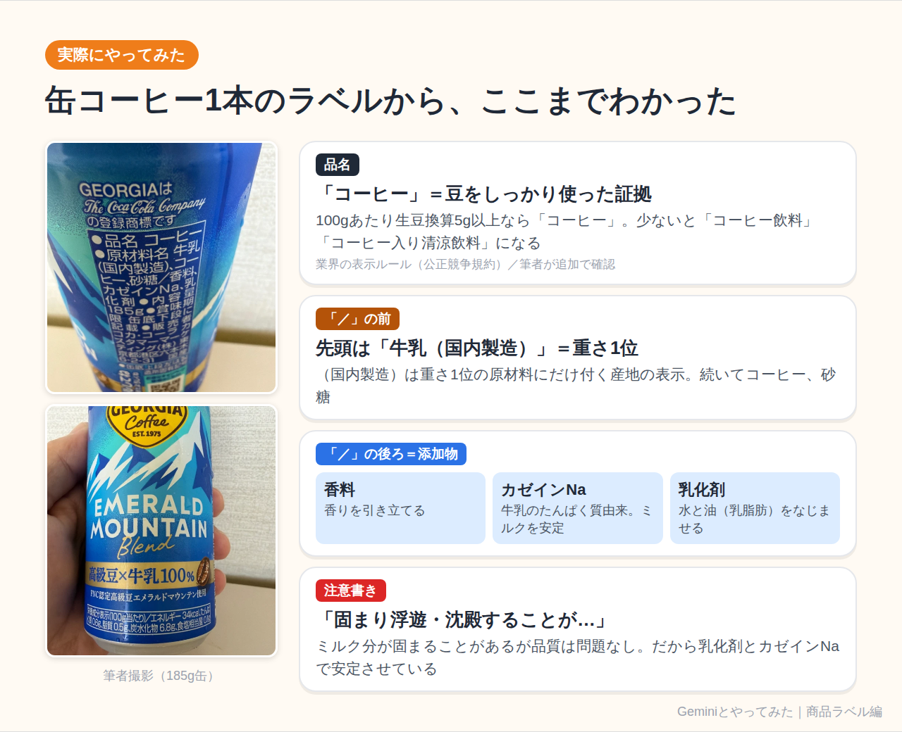
02c_coffee_label.png（缶コーヒーのラベルからわかったこと） 保存
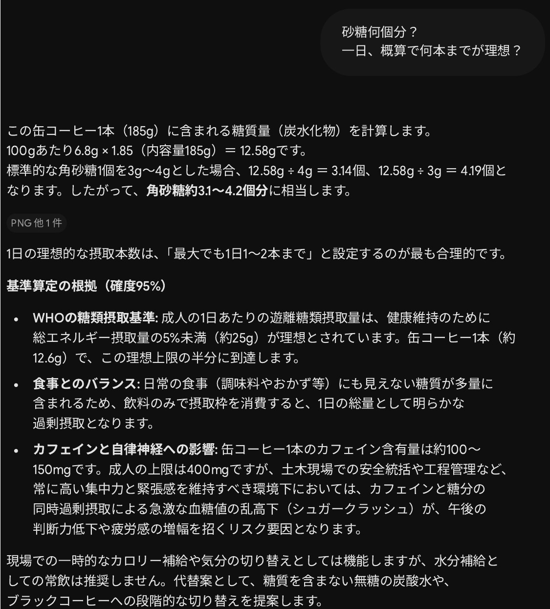
02d_gemini_sugar.png（Geminiの回答：角砂糖換算と1日の目安） 保存
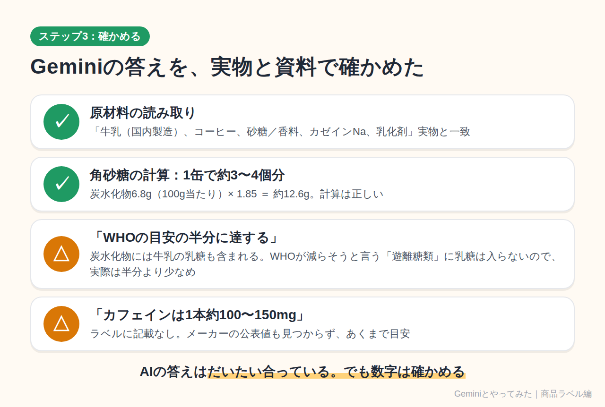
02e_coffee_check.png（Geminiの答えを確かめた結果） 保存
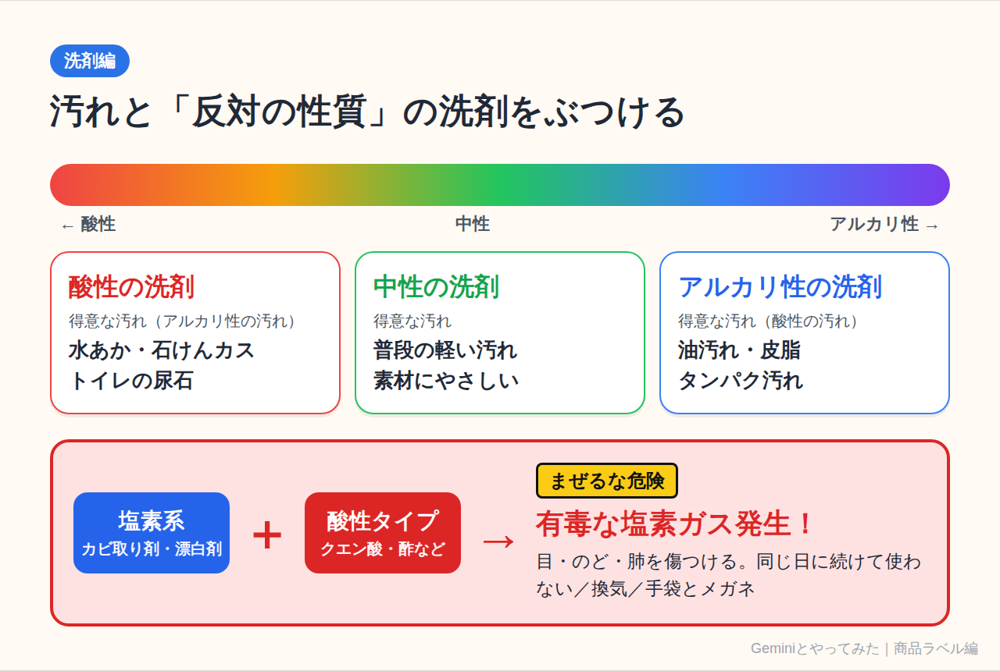
03_detergent.png（洗剤の液性とまぜるな危険） 保存
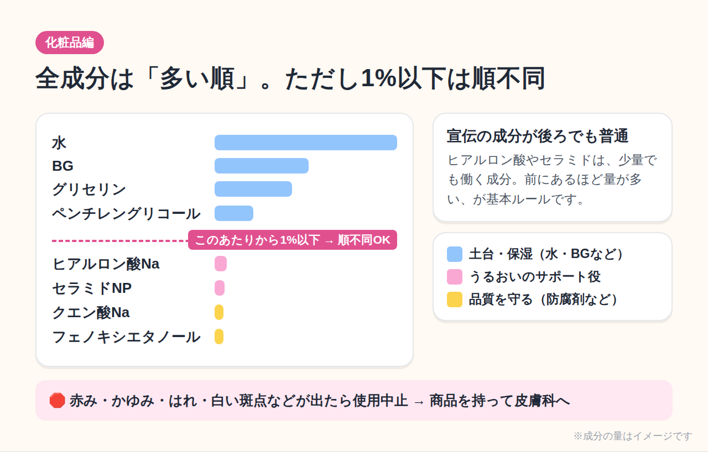
04_cosmetics.png（化粧品の全成分表示の読み方） 保存
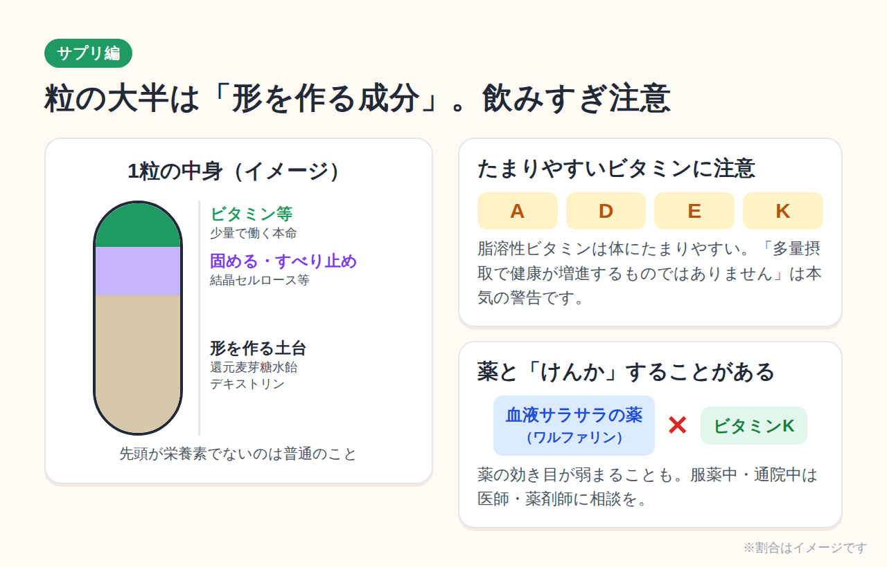
05_supplement.png（サプリの成分と注意書き） 保存
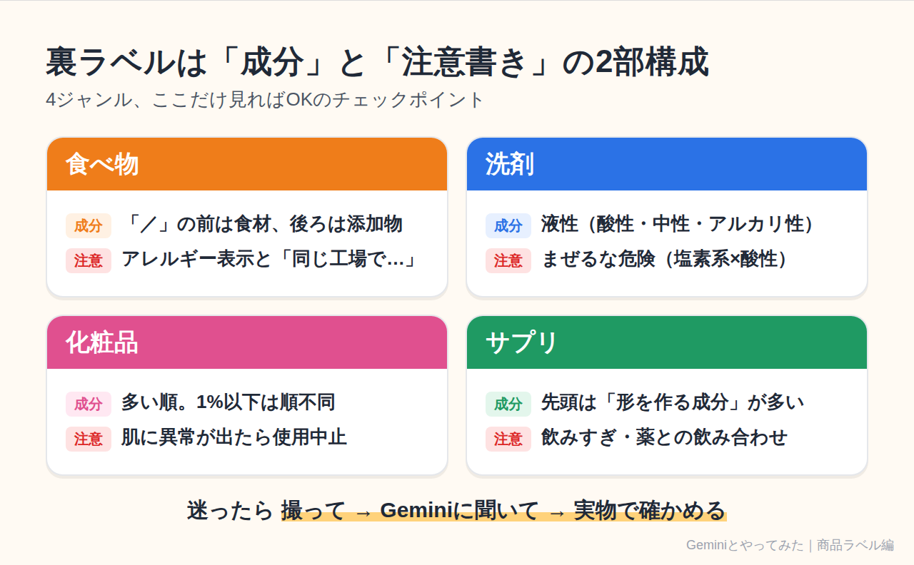
06_summary.png（4ジャンルのチェックポイントまとめ） 保存